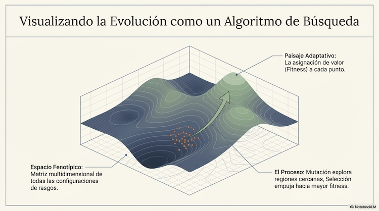
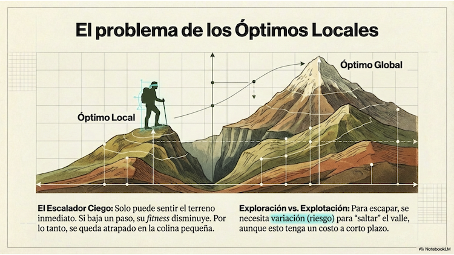

4 Teoría de la Selección Natural
Para cualquier observador del mundo natural, dos propiedades resultan sorprendentes y merecen explicación. La primera es la enorme variabilidad en la morfología, fisiología y comportamiento de los organismos que habitan este planeta. La segunda es que esa variabilidad parece estar finamente ajustada a las características del entorno donde viven esos organismos. La teoría de la selección natural, propuesta por Charles Darwin en 1859, ofrece una explicación unificada de ambas observaciones a partir de tres principios sorprendentemente simples.
Este capítulo tiene dos propósitos. El primero es presentar esos principios, que constituyen uno de los logros más importantes de la ciencia. El segundo, menos obvio pero igualmente importante para este curso, es mostrar que la estructura conceptual de la selección natural es la misma que subyace a los procesos de aprendizaje que estudiaremos en los bloques siguientes. Para hacer esa conexión con precisión, introduciremos hacia el final del capítulo un modelo matemático del cambio evolutivo —la ecuación de Price en su versión simplificada— que revelará por qué la similitud entre evolución y aprendizaje no es solo una metáfora cómoda sino una identidad estructural.
4.1 La Variabilidad y el Ajuste al Entorno
Un recorrido por cualquier parque, zoológico, o incluso una búsqueda rápida en YouTube de documentales de historia natural, nos expone a una variedad de formas de vida difícil de procesar. Organismos unicelulares, hongos, medusas, insectos, aves, mamíferos —y dentro de cada grupo, una diversidad adicional que parece inagotable. Solo entre mamíferos existen aproximadamente 5,500 especies; entre insectos, más de 91,000; entre escarabajos, alrededor de 250,000, lo que llevó al biólogo J.B.S. Haldane a su famosa observación sobre la “predilección del Creador por los coleópteros”. La variabilidad no es solo morfológica: varía la fisiología, el comportamiento, los mecanismos de regulación interna, los sistemas de reproducción.
Lo que Darwin notó en su viaje en el Beagle, y que constituye el punto de partida de su teoría, es que esta variabilidad no es aleatoria con respecto al entorno: está correlacionada con él. En los archipiélagos de las Galápagos, pájaros genéticamente relacionados presentaban picos radicalmente diferentes según el tipo de alimento disponible en la isla que habitaban: picos largos y delgados para acceder al néctar de flores, picos cortos y fuertes para romper semillas duras. Esta coincidencia entre la forma del organismo y las demandas del entorno es lo que llamamos adaptación, y es el fenómeno que requiere explicación.
A mediados del siglo XIX también se sabía, gracias al análisis de fósiles y la datación de capas geológicas, que la diversidad biológica había cambiado a lo largo del tiempo: había especies que habían desaparecido y otras que habían surgido en épocas geológicas más recientes. Era evidente que el mundo biológico no había sido “creado” todo a la vez, y que podía hablarse de una evolución de los organismos. La pregunta era: ¿qué proceso explica tanto el cambio a lo largo del tiempo como el ajuste al entorno?
4.2 Los Tres Principios de la Selección Natural
Darwin propuso que la evolución puede explicarse a partir de tres principios que, cuando se cumplen simultáneamente, producen un cambio adaptativo en la composición de la población.
El primero es la variabilidad heredable. Los organismos producen descendencia que difiere ligeramente de sus progenitores. Esta variación surge por mutaciones (cambios en el material genético) y recombinación (la mezcla de material genético de dos progenitores en la reproducción sexual). No todos los individuos son idénticos: existe diversidad en morfología, fisiología y comportamiento. Lo crucial es que esta variación se transmite, al menos parcialmente, a la siguiente generación.
El segundo principio es la selección diferencial: los organismos interactúan con su entorno, y esa interacción determina cuántos descendientes logra producir cada uno. A este número lo llamamos éxito reproductivo o fitness. Aquellos organismos con características que resultan más exitosas en el entorno actual —que escapan mejor de depredadores, obtienen más alimento, atraen más parejas— tienden a reproducirse más. Esta ventaja debe ser causal, no una mera coincidencia: el rasgo en cuestión contribuye al mayor éxito, no simplemente lo acompaña.
El tercero es la herencia: las características que incrementaron el éxito reproductivo se transmiten a la siguiente generación. La proporción de organismos con esas características aumenta en la población con el paso del tiempo.
Cuando estos tres principios operan a la vez, ocurre selección natural: generación tras generación, los rasgos asociados con mayor éxito reproductivo se vuelven más frecuentes. La composición de la población cambia, favoreciendo las variantes que funcionan mejor en el entorno actual. Este proceso de cambio acumulativo y diferencial es la esencia de la evolución darwiniana.
Vale la pena detenerse en algo que sorprende a muchos estudiantes al encontrarse con estos principios por primera vez: ninguno de ellos requiere intención, planificación ni dirección consciente. La selección natural es un proceso automático. Las bacterias no “intentan” desarrollar resistencia a los antibióticos; simplemente, aquellas que por variación aleatoria ya tenían cierta resistencia sobreviven y se reproducen más, y su descendencia hereda esa característica. La dirección adaptativa emerge de la interacción entre variación aleatoria y el filtro del entorno, sin necesidad de un agente que la dirija.
4.3 Las Fuentes de la Variabilidad
La teoría darwiniana original reconocía la existencia de variación heredable, pero no conocía sus mecanismos —la genética mendeliana se integró décadas después, en lo que se conoce como la Síntesis Moderna. Hoy sabemos que la variabilidad surge principalmente de tres fuentes.
Las mutaciones genéticas son cambios en el material genético que pueden ocurrir por errores en la copia del ADN, exposición a radiación o agentes químicos, entre otras causas. Sus efectos son diversos: algunas mutaciones son letales, otras son neutras y no afectan la supervivencia, y en ocasiones confieren alguna ventaja bajo ciertas condiciones. Las mutaciones neutras pueden acumularse en la población simplemente por azar, en un proceso conocido como deriva genética.
La reproducción sexual y recombinación no crea alelos nuevos, pero genera nuevas combinaciones de los existentes. Cada descendiente recibe una mezcla única de genes de ambos progenitores, lo que produce variación en los fenotipos incluso entre hermanos. La reproducción sexual es una máquina extraordinariamente eficiente para generar diversidad combinatoria.
Finalmente, los eventos geográficos y ecológicos pueden separar poblaciones y forzarlas a evolucionar de manera independiente. El aislamiento geográfico —la formación de una barrera que divide una población— divide el acervo genético en dos. Con el tiempo, cada subpoblación acumula mutaciones distintas y puede diverger hasta dar origen a nuevas especies.
4.4 El Entorno como Filtro
Una forma de visualizar cómo opera la selección es imaginar al entorno como un sistema de filtros. Las condiciones ambientales —disponibilidad de recursos, presencia de depredadores, temperatura, competencia— determinan cuáles variantes de la población sobreviven y se reproducen. Las variantes que no logran superar esos filtros desaparecen; las que los superan persisten y transmiten sus características.
Es importante notar que este proceso no “selecciona” en el sentido de elegir activamente lo mejor. Más bien, elimina lo que no funciona en el entorno actual. Lo que sobrevive no es necesariamente lo óptimo en términos absolutos, sino lo suficientemente bueno para no ser eliminado. Esta distinción tiene consecuencias importantes: la evolución no garantiza soluciones perfectas, solo soluciones funcionales en un entorno particular.
La metáfora del filtro también ilustra por qué la adaptación es siempre relativa al contexto: un rasgo ventajoso en un entorno puede ser desventajoso en otro. Las adaptaciones de las aves de las Galápagos al tipo de alimento disponible en cada isla serían perjudiciales si las aves cambiaran de isla. El “ajuste” es siempre local, contingente, histórico.
4.5 La Selección Natural como Algoritmo de Búsqueda
Llegamos ahora al segundo propósito del capítulo: mostrar la estructura que comparte la selección natural con los algoritmos de aprendizaje y decisión que estudiaremos más adelante.
Imaginemos que nos contratan para buscar jugadores para un equipo de fútbol. Tenemos un conjunto de posibles acciones disponibles: quedarnos en casa viendo partidos por televisión, ir a juegos de ligas de menor categoría, visitar clubes infantiles en una ciudad, en varias ciudades, incluyendo pequeñas localidades. A lo largo del tiempo, probaríamos distintas estrategias y a cada una le iríamos asignando un valor que refleja su éxito para encontrar buenos jugadores. Gradualmente, iríamos refinando nuestra búsqueda, manteniendo las estrategias más exitosas y abandonando las que no funcionan. Y si las condiciones cambian —por ejemplo, los costos de transporte se disparan— la estrategia óptima cambiaría también.
Esta es precisamente la estructura de un algoritmo de búsqueda. Lo que necesitamos para representarla formalmente son cuatro elementos: un espacio de posibilidades (las distintas acciones disponibles), un mecanismo para generar variantes dentro de ese espacio, una función de evaluación que asigna un valor a cada variante según su éxito, y un mecanismo que preserve y propague las variantes más exitosas.
La selección natural tiene exactamente esta estructura. El espacio de posibilidades es el espacio fenotípico; el mecanismo de variación es la mutación y la recombinación; la función de evaluación es el fitness; y el mecanismo de preservación es la herencia. Esta estructura —variación, evaluación, selección— es compartida por todos los procesos en los que algo aprende de la experiencia, ya sea una población que evoluciona, un organismo que aprende, o un algoritmo que optimiza.
4.5.1 El Espacio Fenotípico y el Paisaje Adaptativo
Para formalizar esta idea necesitamos un concepto que aparecerá repetidamente a lo largo del curso: el de espacio de posibilidades.
Imagina que cada organismo puede describirse por sus características medibles: la longitud de sus alas, la eficiencia de su metabolismo, la agudeza de su visión, su velocidad de reacción. Cada característica es una dimensión. Si un organismo tiene valores específicos en todas estas dimensiones, podemos pensar en él como un punto en un espacio multidimensional. El espacio fenotípico es el conjunto de todas las configuraciones posibles de características que un organismo podría tener.
No todas las configuraciones en ese espacio son igualmente exitosas. Si asignamos a cada punto un valor que representa el éxito reproductivo esperado, obtenemos lo que llamamos un paisaje adaptativo: un espacio con “picos” (combinaciones de rasgos con alto fitness) y “valles” (combinaciones con bajo fitness).

La selección natural, vista desde esta perspectiva, es el proceso mediante el cual una población se desplaza por ese paisaje. La mutación y recombinación hacen que la descendencia explore regiones cercanas a la de sus padres; la selección hace que la población tienda a moverse hacia regiones de mayor fitness.
Cuando estudien los algoritmos de aprendizaje más adelante en el curso, encontrarán que también operan buscando en espacios de posibilidades guiados por una función que asigna valor a cada opción. La estructura es la misma; cambia el dominio.
4.5.2 Restricciones: Qué Regiones del Espacio Son Accesibles
Una pregunta natural al imaginar el espacio fenotípico es: ¿puede la evolución llegar a cualquier punto de ese espacio dado suficiente tiempo? La respuesta es no, y entender por qué es importante tanto para la evolución como para los algoritmos de aprendizaje.
Las restricciones físicas imponen límites duros: un insecto no puede crecer al tamaño de un elefante porque su exoesqueleto no podría soportar el peso. Las restricciones genéticas y del desarrollo hacen que no todas las combinaciones de rasgos sean biológicamente realizables: el desarrollo de un organismo sigue rutas específicas que limitan las variaciones posibles. Las restricciones filogenéticas son quizás las más importantes para nuestros propósitos: la evolución es un proceso histórico, y los organismos actuales son modificaciones de organismos ancestrales. La evolución no empieza de cero en cada generación; hereda tanto las soluciones exitosas como las limitaciones de sus ancestros.
Podemos visualizar estas restricciones como filtros anidados. El espacio teóricamente posible es enorme; las restricciones físicas eliminan todo lo que viola leyes de la naturaleza; las restricciones del desarrollo y genéticas reducen aún más el espacio a lo biológicamente realizable; las restricciones filogenéticas lo reducen al espacio accesible para este linaje específico dada su historia; finalmente, el entorno actual determina qué región del espacio accesible tiene alto fitness.
Esta estructura de restricciones anidadas es análoga a lo que en el capítulo sobre asignación de crédito llamaremos sesgos inductivos: predisposiciones que limitan el espacio de búsqueda y hacen manejable un problema que de otro modo sería intratable. Tanto en la evolución como en el aprendizaje, las restricciones no son obstáculos al proceso sino parte constitutiva de cómo funciona.
4.5.3 El Problema de los Óptimos Locales
Una limitación adicional de la selección natural como algoritmo de búsqueda proviene de la naturaleza misma del proceso de ascenso por el paisaje adaptativo. Imaginemos a alguien con los ojos vendados que intenta llegar al punto más alto de una cordillera. La regla que sigue es simple: en cada paso, explora las alturas cercanas y se desplaza hacia la más alta. Si la cordillera tiene un único pico, esta regla lo llevará allí. Pero si hay varios picos separados por valles, la persona quedará atrapada en el primero que encuentre, aunque haya picos más altos en otras regiones.

La selección natural enfrenta exactamente este problema. Una población bien adaptada a su entorno actual puede quedar “atrapada” en un óptimo local: cualquier pequeño cambio la llevaría a un estado menos exitoso, aunque existan configuraciones mucho mejores que requieren pasar por estados intermedios desfavorables. Para escapar de un óptimo local se necesita suficiente variación —exploración— como para “saltar” el valle, pero aumentar la variación tiene costos: también puede sacar a la población de picos donde ya estaba.
Este dilema entre explorar nuevas regiones y explotar lo conocido aparece en todos los algoritmos de búsqueda y aprendizaje. Lo encontraremos en el contexto del forrajeo, la elección entre opciones, el aprendizaje secuencial. La evolución no lo resuelve de manera perfecta; tampoco lo hacen los organismos que aprenden.
Hay una segunda razón, independiente de los óptimos locales, por la que la selección natural no produce organismos “perfectos en todo”: los trade-offs. Muchos rasgos que incrementan el éxito en una dimensión lo reducen en otra. Ser grande puede ayudar a defenderse de depredadores, pero requiere más alimento. Dedicar energía a reproducirse temprano reduce la energía disponible para el mantenimiento del organismo. La cola elaborada del pavo real atrae parejas pero dificulta el vuelo y atrae depredadores. En cada uno de estos casos, no existe una solución que maximice simultáneamente todos los objetivos —el “óptimo” es siempre un balance entre presiones en tensión. Este principio, que aquí aparece en su versión evolutiva, reaparecerá en el siguiente capítulo cuando analicemos cómo los organismos distribuyen su comportamiento entre actividades que compiten por el mismo tiempo y energía.
4.5.4 Cuando el Paisaje Cambia
Hay una diferencia importante entre la selección natural y los algoritmos de optimización más simples: el paisaje adaptativo no es fijo. Cambia a lo largo del tiempo porque el entorno cambia, porque otras especies coevolucionan, porque las adaptaciones de una especie alteran el nicho de otras. Si una presa evoluciona mayor velocidad, cambia el paisaje adaptativo de su depredador. Si el depredador evoluciona mejor visión, cambia el paisaje de la presa. Es como intentar alcanzar la cima de una montaña mientras la montaña misma se está deformando.
Finalmente, cuando diferentes rasgos están en conflicto, no existe una “mejor solución única”. Ser grande puede ayudar a defenderse de depredadores, pero requiere más alimento. Dedicar tiempo a buscar pareja puede ser ventajoso para reproducirse, pero reduce el tiempo disponible para alimentarse. En estos casos, el óptimo depende del balance específico entre las presiones selectivas en ese entorno particular.
A pesar de estas limitaciones, la selección natural ha producido adaptaciones extraordinariamente complejas y efectivas, porque opera con retroalimentación iterativa del entorno a lo largo de escalas de tiempo enormes. Cada generación, la población recibe información sobre qué rasgos funcionan —en forma de éxito reproductivo diferencial— y ajusta su composición en consecuencia. Pequeños ajustes acumulados durante millones de generaciones pueden producir cambios dramáticos.
4.6 Otros Factores Evolutivos
La selección natural es el único proceso conocido que produce adaptaciones, pero no actúa sola. La deriva genética es un proceso de cambio aleatorio en las frecuencias génicas que es especialmente relevante en poblaciones pequeñas. A diferencia de la selección, la deriva no responde al valor adaptativo de los rasgos: puede fijar variantes neutras o incluso ligeramente desventajosas simplemente por azar, y puede en algunas circunstancias permitir que una población “salte” valles adaptativos que la selección por sí sola no podría cruzar. La migración o flujo génico ocurre cuando individuos se desplazan entre poblaciones, introduciendo o removiendo variantes. La selección sexual, identificada por Darwin como un caso especial, opera cuando los rasgos evolucionan no por supervivencia directa sino por éxito en el apareamiento —las colas elaboradas del pavo real son el ejemplo clásico.
4.7 Modelando el Cambio: Ecuaciones en Diferencia
Hasta ahora hemos hablado cualitativamente de cómo las poblaciones cambian generación tras generación. Para hacer esa conexión con el aprendizaje de manera precisa, necesitamos un lenguaje matemático para describir ese cambio. El lenguaje apropiado son las ecuaciones en diferencia.
Una ecuación en diferencia es una regla que nos dice cómo calcular el estado de un sistema en el tiempo \(t+1\) a partir de su estado en el tiempo \(t\). La forma general es simplemente:
\[\text{Estado}(t+1) = f(\text{Estado}(t))\]
donde \(f\) es alguna función que transforma el estado actual en el estado siguiente. Veamos un ejemplo familiar: el crecimiento de casos de COVID-19. En los modelos epidemiológicos más simples, el número de personas infectadas en la semana siguiente depende del número de infectados esta semana:
\[I(t+1) = r \times I(t)\]
donde \(I(t)\) es el número de infectados en el tiempo \(t\), y \(r\) es la tasa de reproducción —cuántas personas, en promedio, infecta cada persona infectada. Si \(r > 1\), los casos crecen exponencialmente; si \(r < 1\), decrecen. Esta simple ecuación captura la dinámica del contagio. La esencia de las ecuaciones en diferencia es esta: expresar el cambio de forma recursiva, de modo que cada nuevo valor \(t+1\) se convierte en el punto de partida del siguiente paso.
Para explorar estos conceptos, abra los Simuladores en Google Colab y siga las instrucciones
4.8 Covarianza: La Relación entre Rasgo y Éxito Reproductivo
En teoría evolutiva queremos una ecuación que nos diga cómo cambia la distribución de rasgos en una población de una generación a la siguiente. Consideremos un rasgo cuantitativo —altura, velocidad, longitud del pico. En la generación \(t\), ese rasgo tiene un valor promedio en la población que llamamos \(\bar{z}(t)\). En la siguiente generación, tendrá un nuevo valor promedio \(\bar{z}(t+1)\). El cambio es:
\[\Delta \bar{z} = \bar{z}(t+1) - \bar{z}(t)\]
Para explorar la covarianza, abra los Simuladores en Google Colab y siga las instrucciones de la introducción para dirigirse al simulador 3.
Esta diferencia nos dice si el rasgo, en promedio, aumentó, disminuyó o se mantuvo igual. La pregunta fundamental es: ¿de qué depende \(\Delta \bar{z}\)? ¿Qué determina la dirección y magnitud del cambio evolutivo?
La respuesta involucra la relación estadística entre el rasgo y el éxito reproductivo. Para medirla necesitamos un concepto: la covarianza.
Imaginemos que medimos dos cosas en cada organismo de una población: el valor de algún rasgo \(z\) —digamos, largo de alas— y su éxito reproductivo \(w\) —número de descendientes. Queremos saber si estas dos variables están relacionadas: cuando \(z\) es grande, ¿\(w\) tiende a ser grande también? ¿O tiende a ser pequeño? ¿O no hay relación?
Recordemos cómo se calcula la media de una variable. Si tenemos \(n\) observaciones \(x_1, x_2, \ldots, x_n\), la media es:
\[\bar{x} = \frac{x_1 + x_2 + \dots + x_n}{n}\]
La covarianza entre dos variables extiende esta idea de manera natural. Para cada organismo \(i\), calculamos qué tan lejos está su valor del rasgo de la media del rasgo: \((z_i - \bar{z})\). Esto es una “desviación” respecto a la media —positiva si ese organismo está por encima del promedio, negativa si está por debajo. Hacemos lo mismo para el fitness: \((w_i - \bar{w})\). Ahora viene la idea clave: multiplicamos las dos desviaciones para cada organismo:
\[(z_i - \bar{z}) \times (w_i - \bar{w})\]
Si ambas desviaciones son positivas —el organismo tiene rasgo alto y fitness alto— el producto es positivo. Si ambas son negativas, el producto también es positivo. Pero si una desviación es positiva y la otra negativa, el producto es negativo. Sumando estos productos y promediando, obtenemos la covarianza:
\[\text{Cov}(w, z) = \frac{\sum_{i=1}^{n}(w_i - \bar{w})(z_i - \bar{z})}{n}\]
Una covarianza positiva significa que cuando \(z\) está por encima de su media, \(w\) tiende a estar por encima de su media también —las variables se mueven juntas. Una covarianza negativa significa que se mueven en sentidos opuestos. Una covarianza cercana a cero indica que no hay relación consistente: saber el valor de \(z\) no ayuda a predecir \(w\).
En el contexto evolutivo, \(\text{Cov}(w, z)\) nos dice: ¿los organismos con valores altos del rasgo \(z\) tienden a tener más descendientes? Si la respuesta es sí, la covarianza es positiva, y ese rasgo tenderá a incrementarse en la población.
4.9 La Ecuación del Cambio Evolutivo
Ahora tenemos las herramientas necesarias: ecuaciones en diferencia para modelar cambios temporales, y covarianza para medir la relación entre rasgo y fitness. Combinándolas, podemos escribir una de las ecuaciones fundamentales de la genética evolutiva moderna.
George Price, en 1970, derivó una forma general del cambio evolutivo conocida ahora como la ecuación de Price. Aquí presentamos una versión simplificada que captura la esencia del proceso para un rasgo cuantitativo en una sola generación:
\[\Delta \bar{z} = \frac{\text{Cov}(w, z)}{\bar{w}}\]
El lado izquierdo, \(\Delta \bar{z}\), es el cambio en el valor promedio del rasgo de una generación a la siguiente. El lado derecho dice que ese cambio depende de la covarianza entre fitness y rasgo, dividida entre el fitness promedio de la población.
La lógica es directa. Si \(\text{Cov}(w, z) > 0\), entonces \(\Delta \bar{z} > 0\): el rasgo aumenta en promedio. Los individuos con valores altos del rasgo tienden a tener más descendientes, y el promedio poblacional se desplaza hacia arriba. Si \(\text{Cov}(w, z) < 0\), entonces \(\Delta \bar{z} < 0\): el rasgo disminuye. Si \(\text{Cov}(w, z) = 0\), entonces \(\Delta \bar{z} = 0\): no hay cambio. El rasgo no está asociado con el éxito reproductivo y la selección no tiene base para alterarlo.
Esta ecuación es elegante porque destila la selección natural a su esencia estadística: el cambio en la media de un rasgo depende de qué tanto ese rasgo covaria con el éxito reproductivo. No necesita conocer nada sobre mecanismos genéticos, estructuras moleculares ni historias individuales; solo necesita la relación estadística entre rasgo y éxito.
Notemos además que esta es una ecuación en diferencia. Nos dice cómo calcular \(\bar{z}(t+1)\) dado \(\bar{z}(t)\), exactamente como las ecuaciones que modelaron el crecimiento de COVID. La evolución, al igual que esos procesos, es un sistema dinámico que se actualiza recursivamente.
Para explorar el cambio evolutivo, abra los Simuladores en Google Colab y siga las instrucciones de la introducción para dirigirse al simulador 4.
4.10 La Equivalencia con los Modelos de Aprendizaje
La ecuación de Price no es solo un resumen matemático de la selección natural. Tiene una estructura que reaparecerá, con distinto sustrato y distinta escala temporal, cuando estudiemos cómo los organismos aprenden de su experiencia. En ambos casos, el sistema se actualiza en proporción a una discrepancia entre lo que ocurrió y lo que se esperaba —o entre un rasgo y su contribución al éxito. Anticipar esta conexión aquí no es un detalle técnico: es el argumento central de este libro. Los mecanismos de aprendizaje que estudiaremos en los bloques siguientes no son procesos independientes de la evolución, sino instancias del mismo algoritmo operando en una escala de tiempo diferente y sobre un sustrato diferente.
4.10.1 El Problema de la Asignación de Crédito
Hay un problema que aparece en cualquier sistema que aprende por retroalimentación, y que conecta directamente la evolución con el aprendizaje. Cuando el sistema recibe una retroalimentación —buena o mala— ¿cómo saber qué componentes del sistema fueron responsables de ese resultado?
Imaginemos un organismo con múltiples rasgos: velocidad de carrera, agudeza visual, eficiencia metabólica, tamaño corporal. Algunos organismos tienen éxito reproductivo alto, otros bajo. La pregunta es: ¿cuál de esos rasgos fue responsable del éxito? ¿La velocidad? ¿La visión? ¿Una combinación? La selección natural resuelve este problema de manera estadística, mediante la covarianza. Si la velocidad covaria positivamente con el fitness a través de la población, pero el tamaño corporal no, entonces la velocidad “merece el crédito”. La población, sin saber nada sobre causalidad, se desplaza hacia mayor velocidad.
Exactamente el mismo problema aparece en el aprendizaje: cuando ocurre un suceso biológicamente importante, ¿a cuál de todos los estímulos y respuestas que precedieron ese suceso se le debe asignar la responsabilidad? Esta pregunta —el problema de la asignación de crédito— es el tema central del Bloque II. Lo fascinante es que, aunque la solución evolutiva (covarianza estadística) y la solución del aprendizaje (reducción del error de predicción) parecen diferentes, ambas atacan el mismo problema fundamental: dado un resultado, inferir qué cambios en el sistema llevarán a mejores resultados futuros.
4.11 Conexiones con el Resto del Curso
Este capítulo establece tres conexiones que reaparecerán a lo largo del libro.
La primera es la equivalencia entre selección natural y aprendizaje como instancias del mismo algoritmo de actualización iterativa. Cuando en el Bloque II veamos los modelos de asignación de crédito, y en el Bloque III los modelos de elección y optimización, reconocerán la misma estructura que identificamos aquí: espacio de posibilidades, función de evaluación, regla de actualización proporcional a una discrepancia.
La segunda es el papel de las restricciones. En la evolución, las restricciones físicas, genéticas y filogenéticas limitan el espacio de rasgos posibles. En el aprendizaje, los sesgos inductivos cumplen la misma función: reducen el espacio de hipótesis y hacen manejable la búsqueda. Veremos esto con detalle en el capítulo sobre asignación de crédito. Igualmente veremos que los programas de refuerzo son restricciones entre diferentes distribuciones de respuestas.
La tercera es el dilema exploración-explotación. La tensión entre explorar nuevas regiones del espacio de posibilidades y explotar lo conocido aparece en la evolución, en el aprendizaje, y en la elección. Es uno de los problemas fundamentales de la adaptación, y dedicaremos atención específica a sus soluciones en varios capítulos del curso.
4.12 Resumen
La teoría de la selección natural explica la diversidad y la adaptación biológica a partir de tres principios: variabilidad heredable, selección diferencial según el entorno, y herencia. Cuando estos tres principios operan simultáneamente, la composición de la población cambia generación tras generación, favoreciendo los rasgos más exitosos en el entorno actual.
La ecuación de Price formaliza este proceso: el cambio en la media de un rasgo es proporcional a la covarianza entre ese rasgo y el éxito reproductivo. Esta ecuación no es solo una descripción de la evolución —es el prototipo de una familia de algoritmos de actualización iterativa que incluye los modelos de aprendizaje por refuerzo. En ambos casos, el sistema se actualiza en proporción a una discrepancia entre lo que tiene y lo que el entorno le devuelve.
La selección natural y el aprendizaje no son metafóricamente similares —son estructuralmente equivalentes. Entender esta equivalencia desde el principio del curso nos dará una ventaja considerable cuando encontremos esas mismas ideas en dominios aparentemente distintos: el condicionamiento, la elección, la planificación secuencial.
5 Preguntas de Estudio — Capítulo 2: Evolución y Adaptación
5.1 Sección I: Comprensión conceptual
Estas preguntas verifican que los conceptos centrales del capítulo quedaron claros. Pueden responderse sin cálculos.
1. La selección natural requiere tres condiciones simultáneas. Describe cada una con tus propias palabras y explica por qué la ausencia de cualquiera de ellas detendría el proceso evolutivo. Da un ejemplo de una situación donde se cumplan las tres.
2. El capítulo afirma que la selección natural no “elige lo mejor” sino que “elimina lo que no funciona”. ¿Cuál es la diferencia práctica entre estas dos descripciones? ¿Por qué importa esta distinción para entender los límites de la adaptación?
3. Explica en qué sentido la selección natural es un proceso “ciego” —sin intención ni dirección consciente. Usa el ejemplo de la resistencia a antibióticos en bacterias para ilustrar tu respuesta.
4. ¿Qué es un paisaje adaptativo? Describe qué representan los picos y los valles, y explica por qué una población no siempre llega al pico más alto.
5. El capítulo distingue entre “óptimo local” y “óptimo global”. Define ambos términos y describe una situación evolutiva concreta donde una población pudiera quedar atrapada en un óptimo local.
6. ¿Por qué el paisaje adaptativo no es fijo? Describe dos razones por las que puede cambiar a lo largo del tiempo y explica cómo esto complica la idea de que la evolución “optimiza” a los organismos.
5.2 Sección II: Restricciones y espacio fenotípico
7. El capítulo describe tres tipos de restricciones que limitan el espacio fenotípico accesible: físicas, genético-del desarrollo, y filogenéticas. Da un ejemplo de cada tipo y explica cómo cada una reduce el espacio de posibilidades disponibles para la selección.
8. ¿Por qué las restricciones filogenéticas son especialmente relevantes para entender la evolución comparada con un proceso de optimización desde cero? Usa el ejemplo del ojo humano mencionado en el texto o propón uno propio.
9. El capítulo conecta las restricciones evolutivas con los “sesgos inductivos” que veremos en aprendizaje. ¿Qué tienen en común? ¿En qué sentido las restricciones no son obstáculos al proceso sino parte de cómo funciona?
5.3 Sección III: El modelo matemático
10. ¿Qué es una ecuación en diferencia? Explica el concepto con el ejemplo del modelo de COVID presentado en el capítulo, e identifica cuál es el “estado” del sistema y cuál es la función de actualización.
11. Define covarianza con tus propias palabras. Sin usar fórmulas, explica qué significa una covarianza positiva, negativa y cercana a cero en el contexto de la relación entre un rasgo fenotípico y el fitness.
12. Considera una población de pájaros donde medimos la longitud del pico y el número de crías por temporada. Describe dos escenarios: uno donde la covarianza entre longitud del pico y éxito reproductivo sea positiva, y otro donde sea negativa. ¿Qué predice la ecuación de Price para cada caso?
13. La ecuación de Price simplificada es:
\[\Delta \bar{z} = \frac{\text{Cov}(w, z)}{\bar{w}}\]
¿Qué ocurre con \(\Delta \bar{z}\) cuando la covarianza es cero? ¿Qué significa biológicamente ese resultado? ¿Puede cambiar el rasgo de todas formas? ¿Cómo?
14. ¿Por qué la ecuación de Price es también una ecuación en diferencia? Escribe explícitamente cómo \(\bar{z}(t+1)\) depende de \(\bar{z}(t)\) y señala la analogía con el modelo de COVID.